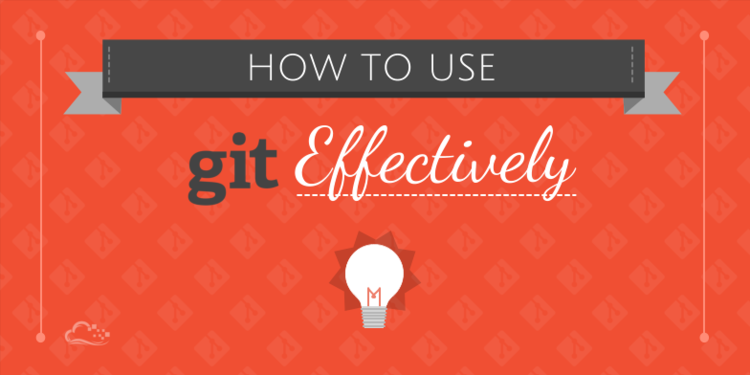
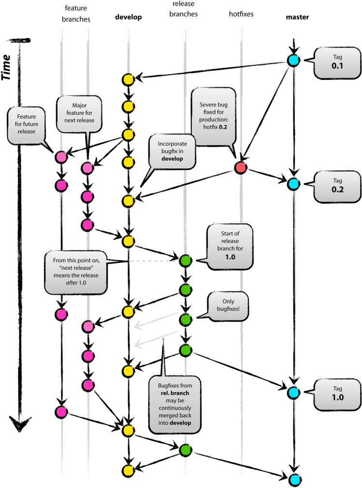
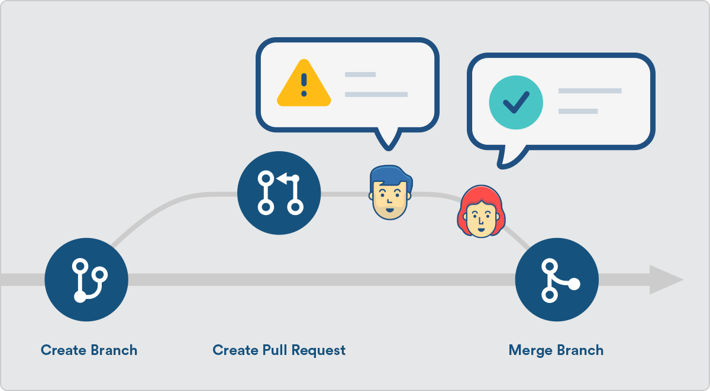
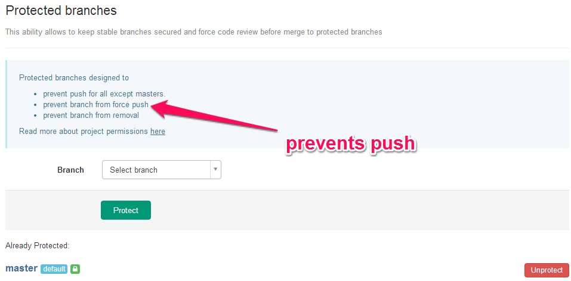
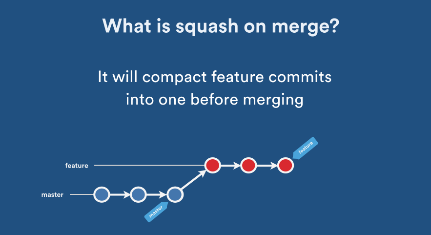

拥有一个良好的工作流程会让整个团队提高工作效率，并且会有一股自然清新的感觉。
- 主要参考来自《Git 工作流程》
- 次要参考来自《Git 使用规范流程》
- 次要参考来自《深入理解学习 Git 工作流》

1. 分支管理
团队开发中，遵循一个合理、清晰的 Git 使用流程，是非常重要的。否则，每个人都提交一堆杂乱无章的 commit，项目很快就会变得难以协调和维护。
- [1] develop 分支 - 开发分支
develop 分支作为常驻开发分支，用来汇总下个版本的功能提交。在下个版本的 release 分支创建之前不允许提交非下个版本的功能到 develop 分支，develop 分支内容会自动发布到内网开发环境。确保 develop 分支随时可编译、可运行，上面的功能模块是相对稳定、干净的，随时可以在 develop 上拉 feature 分支进行开发。
- [2] feature 分支 - 功能分支
对于新功能开发，应从 develop 上切出一个 feature 分支进行开发，命名格式为 feature/project。其中功能名使用小写单词结合中划线连缀方式，如 feature/update-web-style。feature 分支进行编译通过并自测通过后，再合并到主干 develop 分支上。
- [3] 补丁分支 - hotfix branch
所谓补丁分支，就是当代码已经部署到了正式环境之后发现没有预测到底 Bug 时，通过补丁分支进行修改之后，生成补丁进行修复。当然也可以说不使用布丁分支，重新发布新版本也是可以的，但是这样还是不太合理。
- [4] master 分支 - 主分支
当 develop 分支开发完成一个版本的时候，测试没有问题之后就可以将其提交之后合并到 master分支了，master 分支内容会自动发布到内网正式环境。需要注意的是，一般情况从开发分支合入到主干分支不会有代码冲突的，如果有的话那就是没有按照上述流程严格执行的结果。
- [5] release 分支 - 预发布分支
最后就到了发包的最后阶段了，将已经在 master 内网正式环境上测试没有问题的版本合入 release 分支，打包给客户部署或者更新线上环境，完成最后的更新操作。

2. 代码规范
提交代码其实是有很多讲究的，如果我们都按照自己的想法随意的提交代码，到最后自己都不知道当时这次提交到底是为了解决什么问题了。良好的代码提交习惯即有利于自己之后的审查，也有助于其他人观看，同时利用脚本来提取有价值的信息。如查看人个人的工作量，每日的工作任务，等等。
- [1] 提交模板 - commit model
我们更多使用的是如下简化版 commit 模板：
# 模板格式
<提交类型>-<项目名称>: <本次代码提交的动机>
# 示例说明
feat-Pandas: update runtime to V1.3.0- [2] 类型分类 - brand list
| 提交类型 | 类型说明 | 使用频率 |
|---|---|---|
feat |
增加新功能 | 高 |
fix |
修复 Bug | 高 |
perf |
提高性能的代码 | 高 |
style |
编码规范或风格上的修改，不影响功能 | 高 |
docs |
仅改变项目文档 | 高 |
build |
改变项目构建流程或包依赖 | 低 |
ci |
改变 CI 配置或执行脚本 | 低 |
test |
添加缺失测试或更正现有测试 | 低 |
refactor |
代码更改既不修复错误也不添加功能 | 低 |
3. 使用技巧
- [1] 代码合并 - pull request
功能分支合并进 master 分支，必须通过 Pull Request 操作，在 Gitlab 里面叫做 Merge Request。Pull Request 本质其实就是一种对话机制，你可以在提交的时候附加上有用的信息，并 @ 相关的核心开发者或团队，引起他们的注意。让他们为了的代码把好最后一道关卡，保证你的代码质量。

- [2] 分支保护 - protected branch
master 分支应该受到保护，不是每个人都可以修改这个分支，以及拥有审批 Pull Request 的权力。Github 和 Gitlab 都提供“保护分支”这个功能。

- [3] 新建问题 - issue
Issue 用于Bug 追踪和需求管理。建议先新建 Issue，再新建对应的功能分支。功能分支总是为了解决一个或多个 Issue。功能分支的名称，可以与 issue 的名字保持一致，并且以 issue 的编号起首，比如 15-change-password。
开发完成后，在提交说明里面，可以写上"fixes #15" 或者 "closes #67"。Github 和 gitlab 规定，只要 commit message 里面有下面这些动词+编号，就会关闭对应的 issue。
# 以下词语都可以关闭对应issue
close
closes
closed
fix
fixes
fixed
resolve
resolves
resolved这种方式还可以一次关闭多个 issue，或者关闭其他代码库的 issue，格式是 username/repository#issue_number。Pull Request 被接受以后，issue 关闭，原始分支就应该删除。如果以后该 issue 重新打开，新分支可以复用原来的名字。
- [4] 冲突解决 - merge
Git 有两种合并：一种是 “直进式合并” (fast forward)不生成单独的合并节点；另一种是 “非直进式合并” (none fast-forword)会生成单独节点。
前者不利于保持 commit 信息的清晰，也不利于以后的回滚，建议总是采用后者(即使用--no-ff参数)只要发生合并，就要有一个单独的合并节点。
- [5] 合并提交 - squash
为了便于他人阅读你的提交，也便于 cherry-pick 或撤销代码变化，在发起 Pull Request 之前，应该把多个 commit 合并成一个。

前提是，该分支只有你一个人开发，且没有跟 master 合并过。这可以采用 rebase 命令附带的 squash 操作，具体方法请参考《Git 使用规范流程》。

# 第一步：新建分支
$ git checkout master
$ git pull
$ git checkout -b myfeature
# 第二步：提交分支
$ git add .
$ git status
$ git commit -m "this is a test."
# 第三步：与主干同步
$ git fetch origin
$ git rebase origin/master
# 第四步：合并多个commit为一个
# i参数表示互动并打开一个互动界面进行下一步操作
# 会列出当前分支最新的几个commit，越下面越新
# 默认是pick类型，squash和fixup可以用来合并commit
$ git rebase -i origin/master
pick 07c5abd Introduce OpenPGP and teach basic usage
s de9b1eb Fix PostChecker::Post#urls
s 3e7ee36 Hey kids, stop all the highlighting
pick fa20af3 git interactive rebase, squash, amend
# 第六步：推送到远程仓库并发出合并请求
# 要加上force参数是因为rebase以后分支历史改变了
$ git push --force origin myfeature| 编号 | 参数类型 | 使用说明 |
|---|---|---|
| 1 | p/pick |
正常选中 |
| 2 | r/reword |
正常选中，并且修改提交信息 |
| 3 | e/edit |
正常选中，rebase 时会暂停，允许你修改这个 commit |
| 4 | s/squash |
正常选中，会将当前 commit 与上一个 commit 合并 |
| 5 | f/fixup |
与 squash 相同，但不会保存当前 commit 的提交信息 |
| 6 | x/exec |
执行其他 shell 命令 |